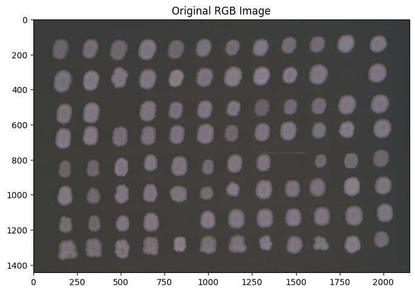
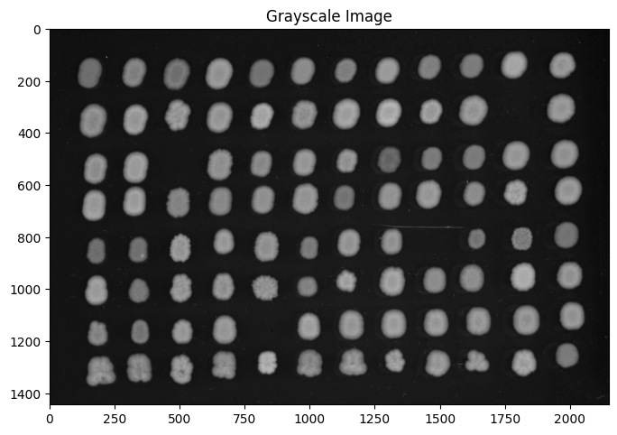
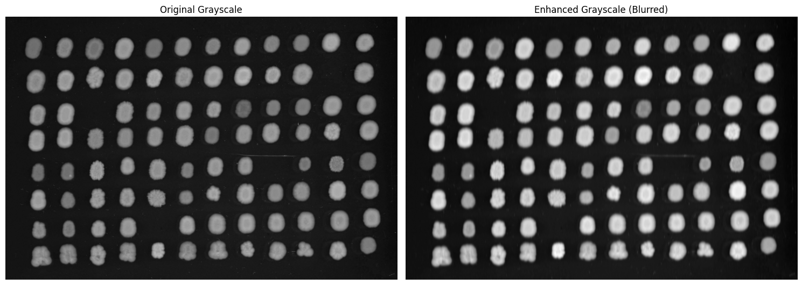
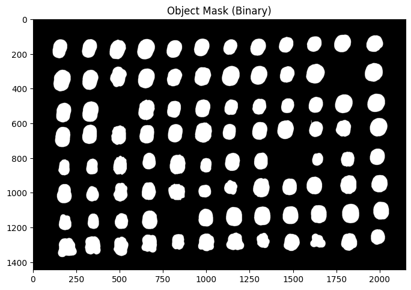
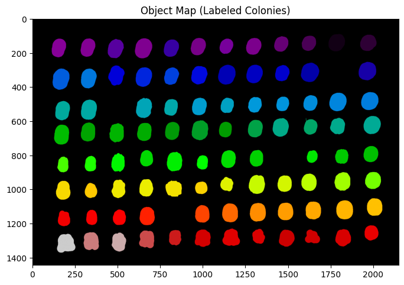
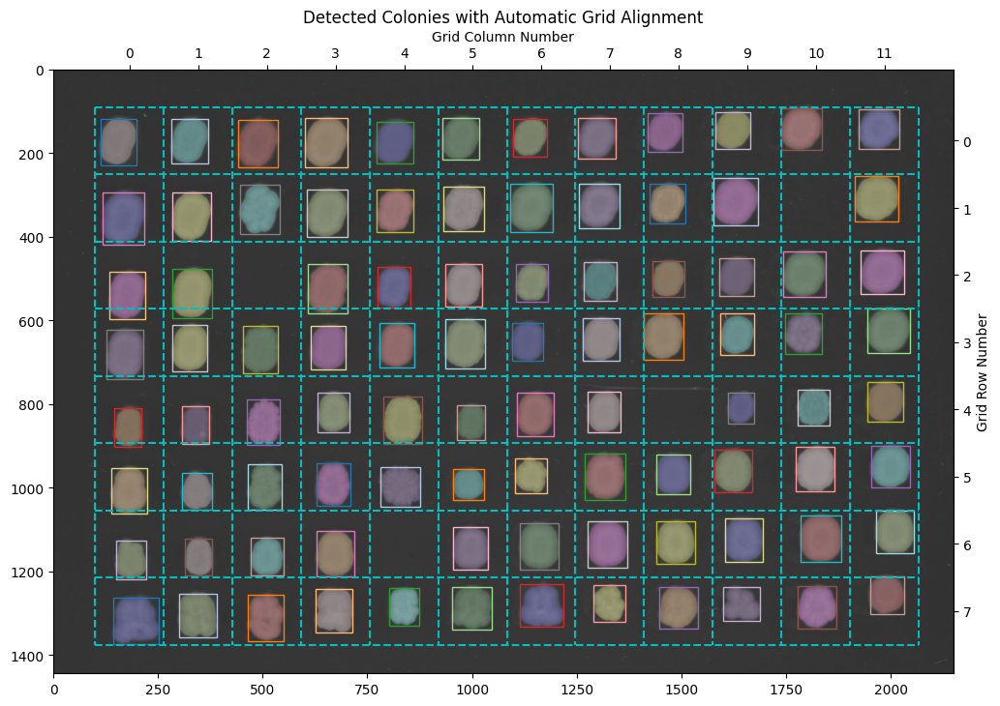
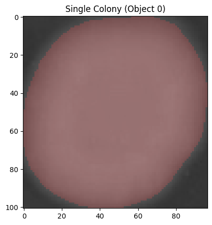

Working with Images: A Tutorial for Microbiologists#
This tutorial introduces the Image class - the foundation for image analysis in phenotypic. You’ll learn how to load, process, and analyze images of microbe colonies.
What is the Image Class?#
The Image class provides:
Multiple representations of your image data (RGB, grayscale, enhanced)
Object detection and tracking
Measurement capabilities
Visualization tools
Prerequisites#
This tutorial is designed for microbiologists with basic Python knowledge. No advanced programming experience needed!
Note: If you’re working with arrayed colonies on plates (96-well, 384-well, etc.), check out grid_image_tutorial.ipynb after completing this tutorial.
Let’s get started!
Setup: Import Libraries#
First, let’s import the phenotypic library (commonly abbreviated as pht).
import phenotypic as pht
import numpy as np
import matplotlib.pyplot as plt
# Display settings for better visualization
%matplotlib inline
plt.rcParams['figure.figsize'] = (10, 8)
Part 1: Understanding Image Components#
Before diving into grid-specific features, let’s understand the core image components that GridImage inherits from the Image class.
Core Image Attributes#
Every image in phenotypic has several data components:
rgb: The original color image datagray: Grayscale version (automatically converted for analysis)enh_gray: Enhanced grayscale (modified during processing, keeps original intact)objmap: Label map showing detected objects (each colony gets a unique number)objmask: Binary mask (True where objects exist, False elsewhere)metadata: Stores information about the image (name, type, etc.)objects: Accessor to work with individual detected objects
Let’s load a sample plate image and explore these components.
Loading a Plate Image#
We’ll use a sample image of K. marxianus colonies on a 96-well plate (8 rows × 12 columns) after 72 hours of growth.
# Load sample plate data (this is a numpy array)
plate_array = pht.data.load_plate_72hr()
# Create a GridImage with 8 rows and 12 columns (standard 96-well format)
image = pht.GridImage(plate_array, name="72hr_plate", nrows=8, ncols=12)
print(f"Image shape: {image.shape}")
print(f"Image name: {image.name}")
print(f"Grid dimensions: {image.nrows} rows × {image.ncols} columns")
Image shape: (1444, 2150, 3)
Image name: 72hr_plate
Grid dimensions: 8 rows × 12 columns
Visualizing the RGB Component#
The rgb component contains the original color image. We can view it using the .show() method.
# Show the original RGB image
image.rgb.show()
plt.title("Original RGB Image")
plt.show()

Visualizing the Grayscale Component#
The gray component is automatically created from the RGB image using weighted luminance conversion. This is used for most analysis operations.
# Show the grayscale version
image.gray.show()
plt.title("Grayscale Image")
plt.show()

Understanding Enhanced Grayscale#
The enh_gray component is a working copy that gets modified during image processing (blur, contrast enhancement, etc.). The original gray and rgb data remain unchanged.
Initially, enh_gray is empty. It gets populated when we apply image operations.
# Check if enhanced grayscale is empty (before processing)
print(f"Enhanced grayscale is empty: {image.enh_gray.isempty()}")
print(f"We'll populate this in the next section when we apply image operations.")
Enhanced grayscale is empty: False
We'll populate this in the next section when we apply image operations.
Part 3: Complete Detection Workflow#
Now let’s detect colonies in our plate image. This is a typical workflow:
Enhance the image (blur to reduce noise)
Detect objects (find colonies)
Visualize results (show overlay with gridlines)
The grid is automatically aligned to the detected colonies!
Step 1: Enhance the Image#
We’ll apply a Gaussian blur to reduce noise and make colony detection more reliable.
from phenotypic.enhance import GaussianBlur
# Create a blur operation with sigma=5 (controls blur strength)
blur = GaussianBlur(sigma=5)
# Apply blur to the image (modifies enh_gray)
image = blur.apply(image)
print("Blur applied successfully!")
print(f"Enhanced grayscale is now populated: {not image.enh_gray.isempty()}")
Blur applied successfully!
Enhanced grayscale is now populated: True
# Let's compare the original grayscale with the enhanced version
fig, (ax1, ax2) = plt.subplots(1, 2, figsize=(15, 6))
ax1.imshow(image.gray[:], cmap='gray')
ax1.set_title("Original Grayscale")
ax1.axis('off')
ax2.imshow(image.enh_gray[:], cmap='gray')
ax2.set_title("Enhanced Grayscale (Blurred)")
ax2.axis('off')
plt.tight_layout()
plt.show()

Step 2: Detect Colonies#
Now we’ll use Otsu’s thresholding method to automatically detect colonies.
from phenotypic.detect import OtsuDetector
# Create a detector
detector = OtsuDetector()
# Apply detection (populates objmap and objmask)
image = detector.apply(image)
print(f"Detection complete!")
print(f"Number of colonies detected: {image.num_objects}")
Detection complete!
Number of colonies detected: 92
Understanding Object Detection Results#
After detection, two new components are populated:
objmask: Binary mask showing where colonies areobjmap: Label map with unique numbers for each colony
# Visualize the object mask
image.objmask.show()
plt.title("Object Mask (Binary)")
plt.show()

# Visualize the object map (each colony has a unique label)
image.objmap.show()
plt.title("Object Map (Labeled Colonies)")
plt.show()

Step 3: Visualize with Grid Overlay#
The show_overlay() method displays detected colonies with the grid automatically aligned!
# Show overlay with gridlines
fig, ax = image.show_overlay(show_gridlines=True, figsize=(12, 10))
plt.title("Detected Colonies with Automatic Grid Alignment")
plt.show()

Part 7: Working with Individual Objects#
The objects accessor lets you work with individual detected colonies.
# Access information about all objects
print(f"Total objects detected: {len(image.objects)}")
print()
# You can iterate through objects
print("First 5 colony labels:")
for i, colony in enumerate(image.objects):
if i >= 5:
break
print(f" Colony {i}: shape = {colony.shape}")
Total objects detected: 92
First 5 colony labels:
Colony 0: shape = (101, 97, 3)
Colony 1: shape = (95, 96, 3)
Colony 2: shape = (89, 84, 3)
Colony 3: shape = (91, 83, 3)
Colony 4: shape = (101, 89, 3)
# Extract a single colony
single_colony = image.objects[0]
# Visualize it
fig, ax = single_colony.show_overlay()
plt.title("Single Colony (Object 0)")
plt.show()

Part 8: Making Measurements with Grid Data#
Now let’s measure colony properties. The grid information is automatically included in the measurements!
from phenotypic.measure import MeasureSize
# Create a size measurement module
size_measurer = MeasureSize()
# Measure all colonies
measurements = size_measurer.measure(image)
print(f"Measured {len(measurements)} colonies")
print()
measurements.head(10)
Measured 92 colonies
| ObjectLabel | Size_Area | Size_IntegratedIntensity | |
|---|---|---|---|
| 0 | 1 | 7856.0 | 3574.453587 |
| 1 | 2 | 7158.0 | 3165.489194 |
| 2 | 3 | 5940.0 | 2417.757155 |
| 3 | 4 | 5898.0 | 2441.486137 |
| 4 | 5 | 7063.0 | 3016.462067 |
| 5 | 6 | 6947.0 | 3090.659038 |
| 6 | 7 | 9316.0 | 4154.461717 |
| 7 | 8 | 7229.0 | 3010.477629 |
| 8 | 9 | 7276.0 | 2820.522515 |
| 9 | 10 | 5534.0 | 2291.005595 |
Summary and Key Takeaways\n#
\n
What We Learned\n#
\n
Image Components - Seven core components work together:\n
rgb: Original color image\ngray: Automatic grayscale conversion \nenh_gray: Working copy for processing\nobjmap&objmask: Detection results\nmetadata: Image information\nobjects: Individual object access\n \n
Typical Workflow:\n
# 1. Load\n image = pht.Image.imread('plate.jpg')\n \n # 2. Enhance\n image = GaussianBlur(sigma=5).apply(image)\n \n # 3. Detect\n image = OtsuDetector().apply(image)\n \n # 4. Visualize\n image.show_overlay()\n \n # 5. Measure\n measurements = MeasureSize().measure(image)\n \n # 6. Export\n measurements.to_csv('results.csv')\n ```\n
\n 3. Key Principles:\n
Original data (
rgb,gray) is never modified\nProcessing operates on
enh_gray\nDetection populates
objmapandobjmask\nMeasurements are stored in pandas DataFrames\n \n
Next Steps\n#
\n
For plate arrays: Check out the
grid_image_tutorial.ipynbto learn about automatic grid alignment\nFor pipelines: Learn about
ImagePipelinefor complex workflows\nFor time series: See the growth curves tutorial\n \n Try with your own images and explore different detectors and measurement modules!\n \n Happy analyzing! 🔬\n